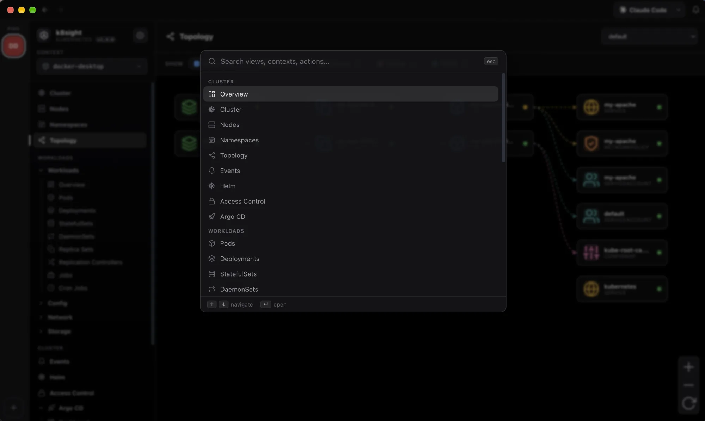
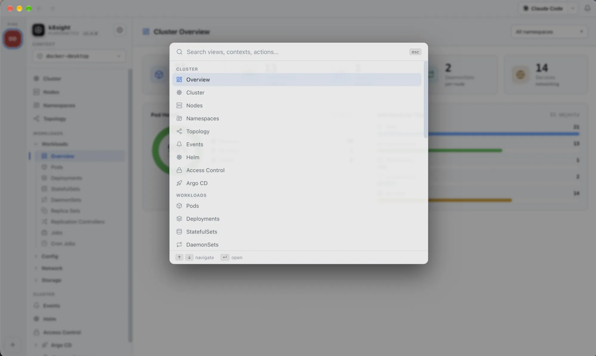

All your cluster operations, beautifully unified
Browse workloads, watch live metrics, stream logs, open a shell, forward ports and inspect topology, with a native title bar, a command palette and Apple-smooth motion throughout.


The full walkthrough
Built for everyday cluster work
Live cluster dashboard
Node and pod health donuts, workload charts and real capacity, an at-a-glance overview the moment you connect.
Every workload type
Pods, Deployments, StatefulSets, DaemonSets, Services and more, with live CPU/memory from metrics-server and per-container status.
Command palette (⌘K)
A Spotlight-style palette to jump to any view, cluster or action from the keyboard, plus a native top toolbar with back/forward history.
Interactive shell
A real TTY into any pod: kubectl exec -it streamed over WebSocket to a full xterm.js terminal, docked in a bottom panel.
Pro log viewer
Timestamps, per-container or merged "all containers" streams, case/regex search with match navigation, line wrap, tail size and one-click download.
Interactive topology
Pan & zoom the graph of Deployment → ReplicaSet → Pod → Service relationships to understand what talks to what.
Port forwarding
Forward a Service port straight to localhost: pick a port or grab a random one, no CLI juggling.
Custom Resources & Helm
Lazy-loaded CRD tree with YAML details, and Helm releases with their values and manifests. Search Artifact Hub and install or upgrade charts in a few clicks, using your local helm.
Slide-in detail drawer
A right-side panel with metadata, live metric graphs, conditions and containers, cross-linked namespace → node → pod → owner.
Light & dark themes
One-click theme switch: a crisp light mode and a redesigned true-black dark mode, token-driven and persisted across sessions.
Multi-cluster quick-switch
Pin your favourite kubeconfig contexts to a left-hand rail and jump between dev, staging and prod clusters in a single click.
MCP server built in
Expose the same read-only tools to your own agents over the Model Context Protocol, via HTTP or stdio, with write tools off by default.
External tools, detected
k8sight finds kubectl, helm, cloud CLIs and coding agents on your real login-shell PATH, shown with their official logos.
Updates itself
New versions download in the background and install on restart. Prefer to update by hand? Turn it off in Preferences.
Sortable, live tables
Sort any column by its real value, from CPU to age. Data refreshes in place, so your selection, scroll and filters stay put.
Jump anywhere with ⌘K
A Spotlight-style command palette reaches every view, context and action from the keyboard. Back and forward history in the toolbar works like a browser.


Explore the other features
See it on your own cluster
Free and open source for macOS, Windows and Linux. No cluster handy? The built-in demo works with nothing but the app.